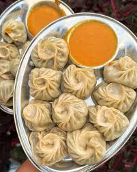

Home
Recipe of Mo:Mo

Description
Buff Momo is a beloved Nepali delicacy—steamed dumplings
filled with spiced buffalo meat that burst with flavor in every bite.
These juicy dumplings are soft on the outside and packed with aromatic,
savory filling, making them perfect as a snack, appetizer, or a hearty meal.
This recipe brings the authentic taste of Nepali street food to your kitchen.
With a simple dough, fresh ingredients, and balanced spices,
you'll master the art of making momo that's tender, juicy, and irresistibly delicious.
Serve them with classic achar (spicy dipping sauce) for the ultimate experience.
Ingredients
- For the dough:
- 2 cups all-purpose flour
- ½ tsp salt
- Water (as needed)
- For the filling:
- 500g buffalo meat, finely minced
- 1 medium onion, finely chopped
- 2-3 cloves garlic, minced
- 1-inch piece of ginger, minced
- 2-3 green chilies, finely chopped (adjust to taste)
- 2 tbsp soy sauce
- ½ tsp black pepper
- ½ tsp cumin powder
- 2 tbsp chopped cilantro/coriander leaves
- Salt to taste
- For serving:
- Spicy tomato achar (Nepali chili sauce)
Steps
- Prepare the dough: In a large bowl, mix flour and salt.
Gradually add water and knead into a smooth, soft dough.
Cover and let it rest for 20-30 minutes.
- Make the filling: In a bowl, combine minced buffalo meat,
onion, garlic, ginger, green chilies, soy sauce, black pepper, cumin powder, cilantro, and salt. Mix well.
- Shape the momos: Roll the dough into small balls,
then flatten each into a thin circle. Place a spoonful of filling
in the center and fold the edges to seal tightly. You can shape them round or pleated.
- Steam the momos: Line a steamer basket with parchment or cabbage leaves.
Arrange momos without touching each other and steam for 10-12 minutes until cooked and juicy.
- Serve: Serve hot with spicy tomato achar or your favorite dipping sauce.
Enjoy the authentic Nepali taste!